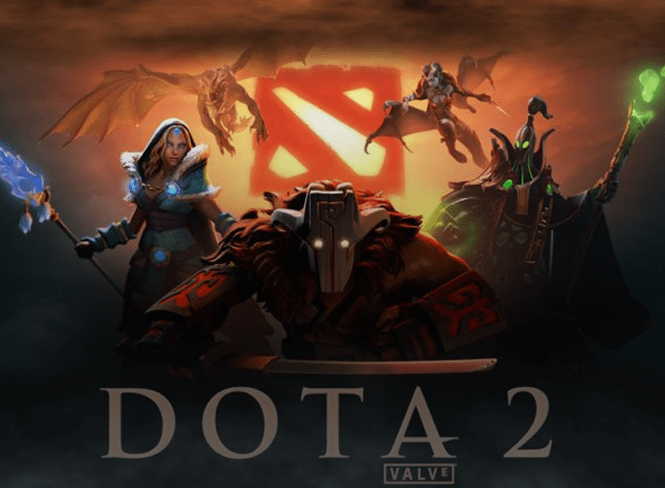

Dota 2 — багатокористувацька відеогра в жанрі стратегії в реальному часі. У Dota 2 грають 2 команди по 5 осіб у кожній. Кожен гравець контролює лише одного персонажа , якого називають героєм.
Dota 2 — багатокористувацька відеогра в жанрі стратегії в реальному часі. У Dota 2 грають 2 команди по 5 осіб у кожній. Кожен гравець контролює лише одного персонажа , якого називають героєм.

Counter-Strike: Global Offensive є багатокористувацьким шутером від першого обличчя, в якому гравці розподіляються за двома командами і змагаються друг з другом. У грі представлені дві команди: терористи та спецназ, терористи, повинні заплентити бомбу в одній з кількох точок закладки, а спецназ - успішно розмінувати.

World of Tanks - культова ММО-гра про бронетехніку, яка підкорила мільйони гравців по всьому світу. Різноманітність ігрових карт, історично достовірні машини, реалістичний геймплей - приєднуйтесь до армії танкістів і пориньте в атмосферу легендарних боїв.